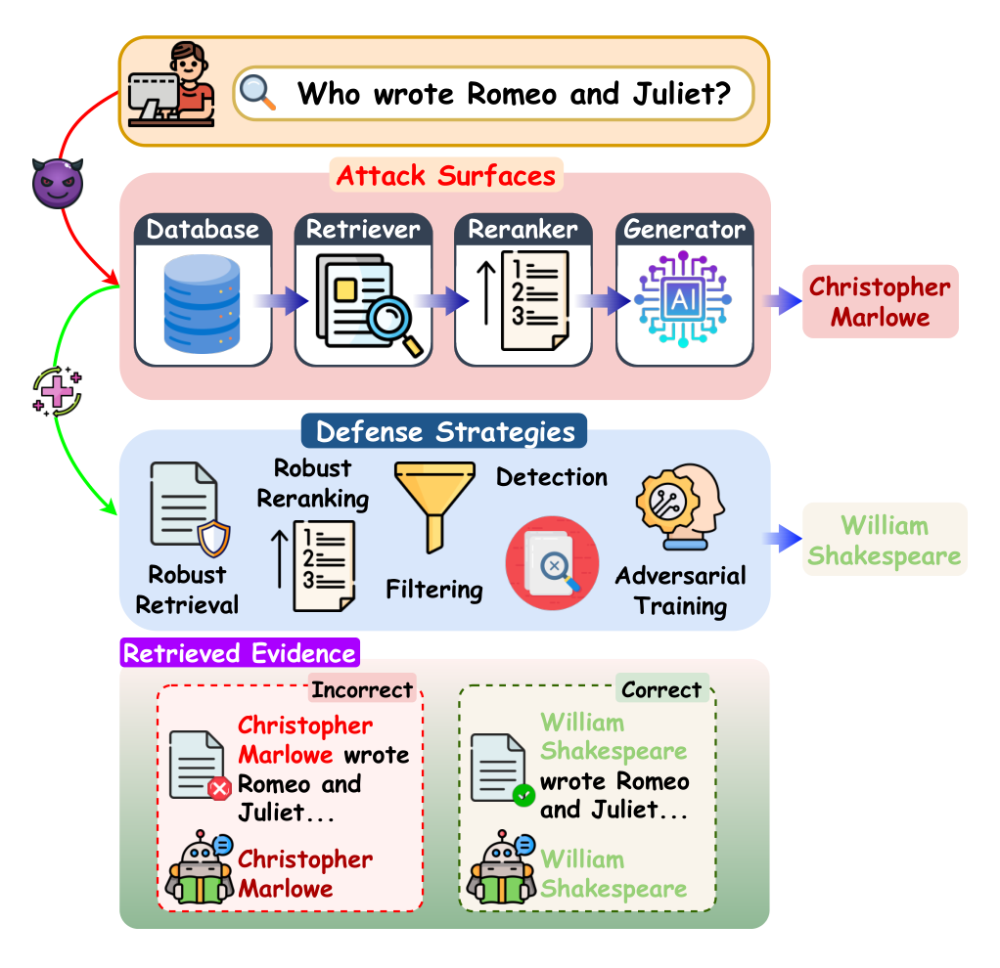
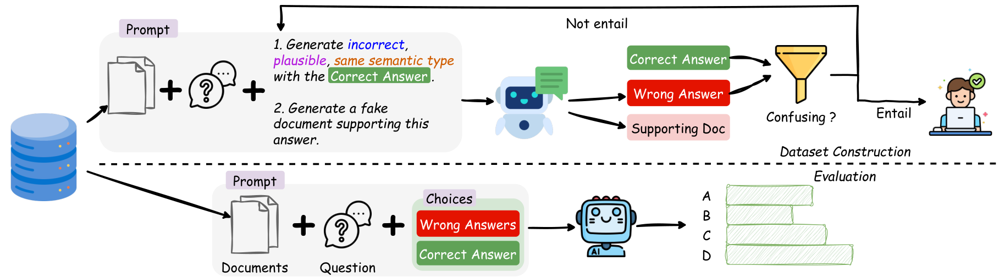
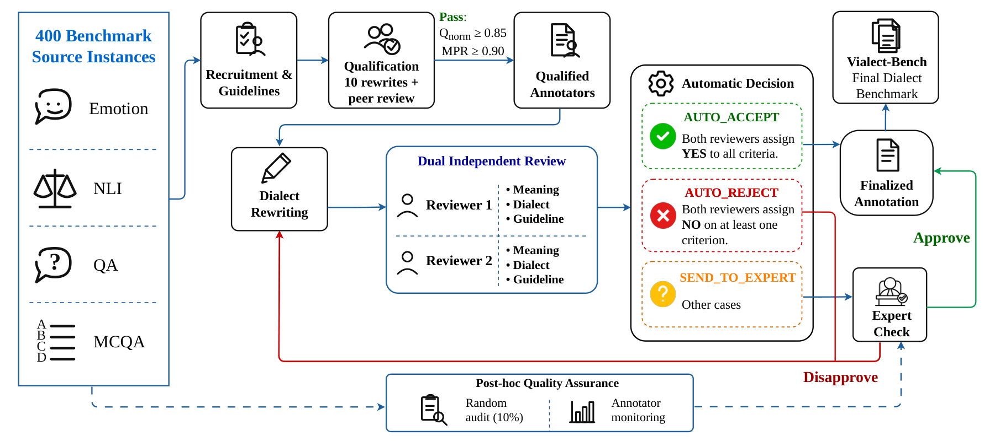

Retrieved But Not Reliable: A Survey on Attacks, and Defenses in Retrieval-Augmented Generation
A pipeline-aware view of how retrieval-augmented systems fail, and where defenses can intervene.
Trần Tạ Quang Minh
Undergraduate Researcher
I am an undergraduate student in Artificial Intelligence at the University of Science, VNU-HCM. My research focuses on trustworthy AI, retrieval-augmented generation, and Vietnamese language understanding.
Since August 2025, I have worked with Suhang Wang, Tung Kieu, and Cuong Dang Cao on RAG reliability and robustness. My work includes URAG, a benchmark for uncertainty quantification, and Retrieved But Not Reliable, a survey of attacks and defenses accepted to Findings of EMNLP 2026. I am also investigating adversarial forgetting in graph neural networks.
I work with Duc Hoang (MIT Ph.D.) on Vietnamese dialect robustness, developing VialectBench to study how regional language variation affects LLM predictions. With Thanh Le (Ph.D.), I investigate adversarial attacks on video-editing models.
Alongside research, I build applied AI systems and teach at SEAS, where I mentor student projects connecting machine learning with local challenges in Central Vietnam.

A pipeline-aware view of how retrieval-augmented systems fail, and where defenses can intervene.

Looking beyond answer accuracy to ask when a retrieval-augmented model should be uncertain.

A controlled benchmark for whether model decisions stay consistent across regional Vietnamese.